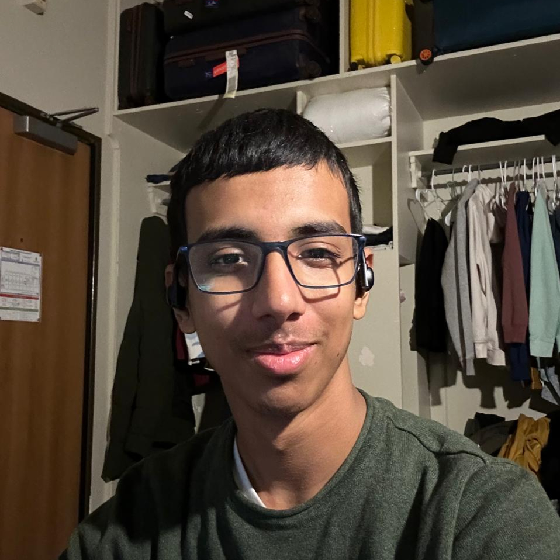

Aarav Dayal
About Me

- CEO and Founder of Lumatozer where we work on scaling technologies far beyond what has been achieved conventionally to date.
- I am a System Architect. I build and design large-scale efficient architecture and infrastructure.
- I am also a Full Stack Developer, self-proclaimed Network Engineer and Cyber Security Researcher.
- Currently working on a blockchain, LTZ-Chain - one of the world's fastest and most efficient blockchain to date.
- Also working on a language Vitality which has a fully reference counting based parallelized, non-invasive, non-STW memory architecture and enforces a 0 circular reference model. Vitality comes with its own runtime scheduler to provide functionality similar to goroutines and an async-await free architecture.
- I am an IronFallibilist - a person who holds a very strong belief set and follows it very strictly while constantly working towards breaking their beliefs to make their belief set even stronger.
- Born in 2007
- Student at DPS R.K. Puram
Achievements
- Regional Winner at Tetr Disrupt 2025 ($1000)
- Neo X Blockchain Hackathon 2024 Second Runner Up ($2000)
- Winner at EthIndia 2023 for best use of Cross Chain Messaging ($1000)
- National Winner of Enigma Slash Cryptic Hunt organized by IIIT Delhi
- Second Runner Up at Nasa Space Apps 2023 NCR Region
- Winner at CodeDay Delhi 2023